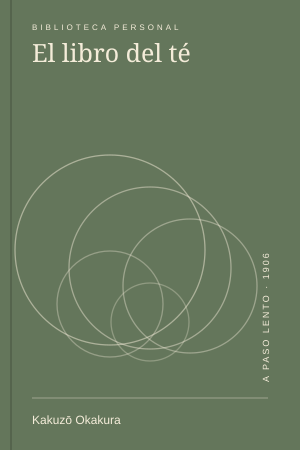
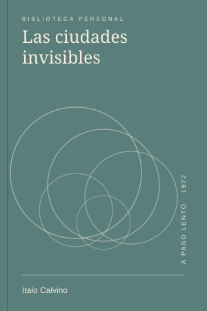
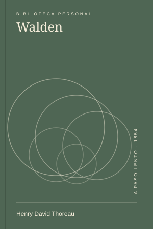

Caminar
Henry David Thoreau · 1862
★★★★☆Leído
Libros leídos, preguntas abiertas y páginas que dejaron una marca.
Henry David Thoreau · 1862

Kakuzō Okakura · 1906

Antoine de Saint-Exupéry · 1943

Jorge Luis Borges · 1944

Italo Calvino · 1972

Hermann Hesse · 1922

Virginia Woolf · 1929

Henry David Thoreau · 1854
Probá otro año o valoración.
Las cubiertas son ilustraciones creadas para la demo, no portadas oficiales. Cada título enlaza a su nota. Las valoraciones y los datos de edición son de ejemplo.